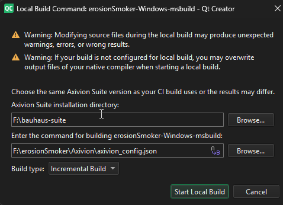
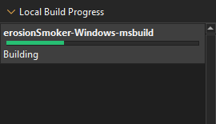

Local analysis with Axivion
You can perform local analysis for projects you are connected to on a dashboard. In the issue table, select the respective dashboard and project. You need to have the Axivion Suite set up locally and a valid licence.
To set up a local build for the active project inside the Axivion view:

- Select in the issue table.
- Select the Axivion Suite base directory in Axivion Suite Installation Directory.
- Enter the command or choose a script or the respective JSON file holding the Axivion configuration.
- Select the build type from Build Type. You may choose either a clean build or an incremental build.
- Select Start Local Build to perform the build with the given parameters.
View running and finished local builds in Local Build Progress.

Right-click a local build to cancel a running build from the context menu. You can inspect the Axivion or build log of local builds after they finished. Select Remove All Finished to remove the local builds which have finished already from the local build progress.
Local dashboard
If the current selected project has a local build present, you may see its result by switching to the local dashboard view.
Select to do so. This starts the local dashboard and switches the issue table to display the latest results.
Select Local Dashboard again to switch back to the global dashboard.
Information about using the global dashboard applies to the local dashboard as well (issue type selection, filtering), but you have only a limited version selection.
In Version, you can switch between the reference version of the global dashboard and the local dashboard results. Depending on the local build result you may limit the issue table to local issues or changed issues.
See also Axivion Preferences, View Axivion static code analysis results, Enable and disable plugins, How To: Analyze, Analyzers, and Analyzing Code.